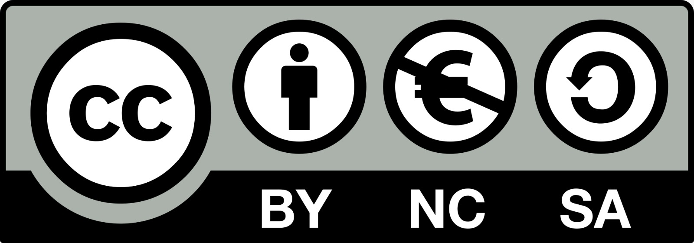

Página legal
Primera edición (html), 10 de diciembre de 2026
DR© 2026 UNIVERSIDAD NACIONAL AUTÓNOMA DE MÉXICO
Facultad de Medicina Veterinaria y Zootecnia.
Ciudad Universitaria, Coyoacán, 04510, Ciudad de México.
ISBN: ----------- (HTML)
Esta edición y sus características son propiedad de la Universidad Nacional Autónoma de México.
Prohibida la reproducción parcial o total por cualquier medio, sin autorización escrita del titular de los derechos patrimoniales.
El Comité Editorial de la FMVZ de la UNAM reconoce a la Dra. Norma Rivera Fernández,
jefa del Departamento de Microbiología y Parasitología de la Facultad de Medicina de la UNAM, por su colaboración como revisora técnica de esta obra.
Hecho en México
Formato: e-book
Peso: 69.7 mb

Diseño y programación:
carlos iván sánchez sánchez
Retoque digital de imágenes:
angélica corona gómez
Revisión lingüística y de galeras:
elizabeth sarmiento de la huerta
Webmaster:
marco antonio domínguez guadarrama
Directorios institucionales
UNAM
Dr. Leonardo Lomelí Vanegas
Rector
Dr. Javier de la Fuente Hernández
Secretario General
Mtro. Hugo Concha Cantú
Abogado General
Mtro. Tomás Humberto Rubio Pérez
Secretario Administrativo
Dra. Diana Tamara Martínez Ruíz
Secretaria de Desarrollo Institucional
M. I. Fernando Macedo Chagolla
Secretario de Servicio y Atención a la Comunidad Universitaria
Dr. Manuel Palma Rangel
Secretario de Prevención y Apoyo a la Movilidad y Seguridad Universitaria
FMVZ
Dr. Carlos G. Gutiérrez Aguilar
Director
Dr. José Luis Dávalos Flores
Secretario General
L.C. Enrique López Martínez
Secretario Administrativo
M en C Mariano Hernández Gil
Secretario de Vinculación y Proyectos Especiales
MVZ Miguel Ángel Cuevas Díaz
Jefe del Departamento de Publicaciones
MVZ Enrique Basurto Argueta
Jefe del Departamento de Diseño Gráfico y Editorial
Colofón
Editada por la Facultad de Medicina Veterinaria y Zootecnia,
Departamento de Diseño Gráfico y Editorial
de la Secretaría de Vinculación y Proyectos Especiales:
edificio 2, planta baja, FMVZ-UNAM.
Avenida Universidad 3000, Ciudad Universitaria, Coyoacán,
04510,
México, Ciudad de México.